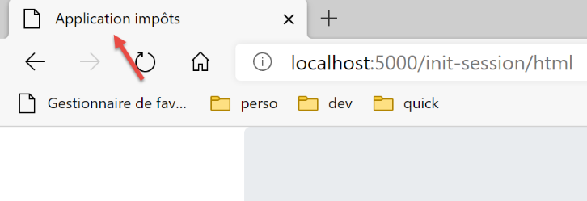
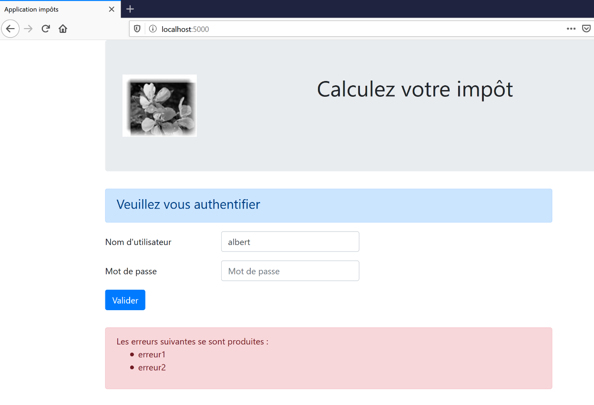
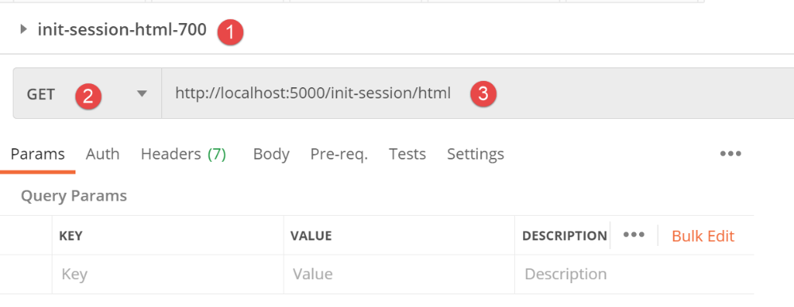
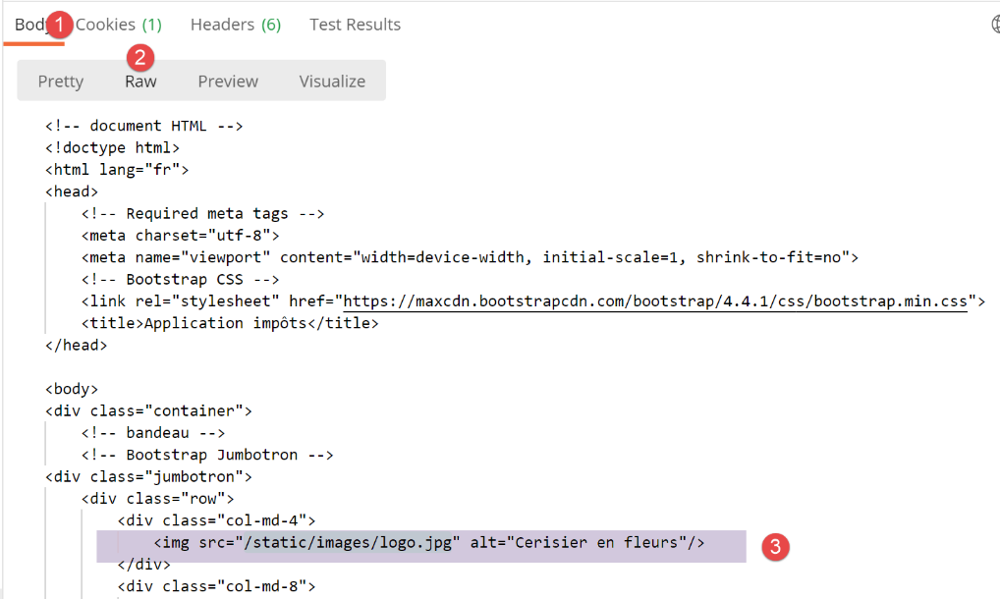
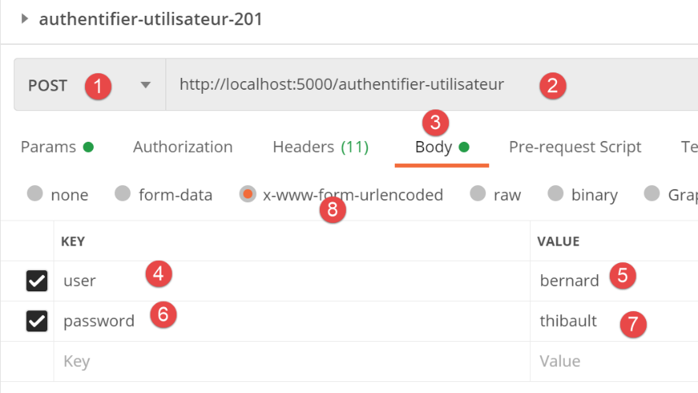
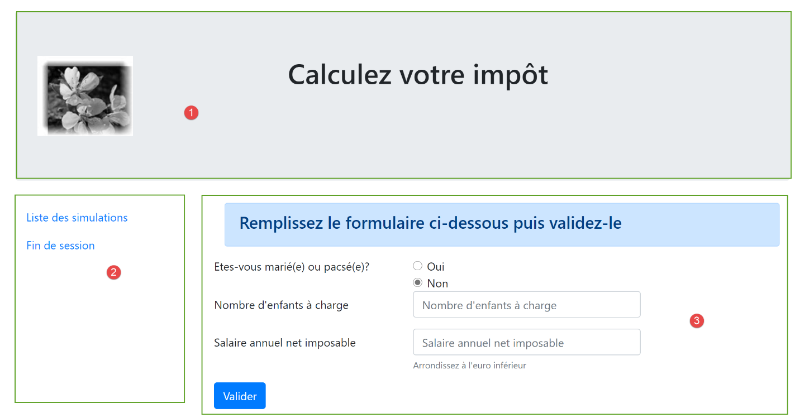
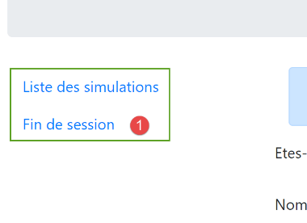
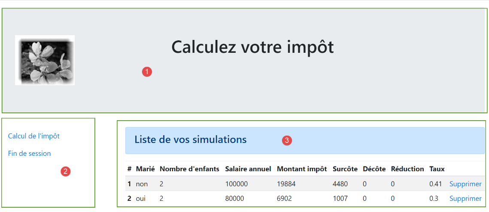
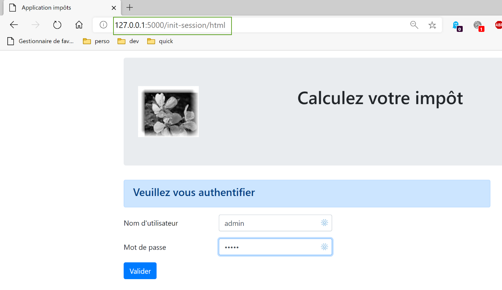

32. O modo HTML da versão 12
Tínhamos indicado no início da versão 12 que iríamos desenvolver a aplicação em várias fases. Tínhamos escrito:
- a partir das vistas da aplicação HTML, iremos definir as ações que a aplicação web deve implementar. Iremos utilizar aqui as vistas reais, mas poderiam ser simplesmente vistas no papel;
- a partir dessas ações, iremos definir os URL de serviço da aplicação HTML;
- vamos implementar estes URL de serviço com um servidor que fornece jSON. Isto permite definir a estrutura do servidor web sem nos preocuparmos com as páginas HTML a serem fornecidas. Iremos testar estes serviços URL com o Postman;
- depois, testaremos o nosso servidor jSON com um cliente de consola;
- assim que o servidor jSON tiver sido validado, passaremos à programação da aplicação HTML;
Temos os servidores jSON e XML operacionais. Podemos agora passar para o servidor HTML. Veremos que este retoma toda a arquitetura desenvolvida para os servidores jSON / XML e lhes acrescenta uma gestão de vistas HTML.
32.1. Arquitetura MVC
Vamos implementar o modelo de arquitetura denominado MVC (Modelo – Vista – Controlador) da seguinte forma:
O processamento de um pedido de um cliente decorrerá da seguinte forma:
- 1 - pedido
Os URL solicitados terão o formato http://machine:port/action/param1/param2/… O [Contrôleur principal] utilizará um ficheiro de configuração para «encaminhar» o pedido para o controlador correto. Para tal, utilizará o campo [action] do URL. O restante do URL e do [param1/param2/…] é constituído por parâmetros opcionais que serão transmitidos à ação. O C de MVC é, neste caso, a cadeia [Contrôleur principal, Contrôleur / Action]. Se nenhum controlador puder processar a ação solicitada, o servidor web responderá que a ação URL solicitada não foi encontrada.
- 2 - processamento
- A ação selecionada [2a] pode utilizar os parâmetros parami que a ação [Contrôleur principal] lhe transmitiu. Estes podem provir de duas fontes:
- do caminho [/param1/param2/…] do URL,
- de parâmetros enviados no corpo do pedido do cliente;
- no processamento do pedido do utilizador, a ação pode necessitar da camada [métier] [2b]. Uma vez processado o pedido do cliente, este pode gerar várias respostas. Um exemplo clássico é:
- uma resposta de erro, caso a solicitação não tenha podido ser processada corretamente;
- uma resposta de confirmação, caso contrário;
- o [Contrôleur / Action] enviará a sua resposta [2c] ao controlador principal, juntamente com um código de estado. Estes códigos de estado representarão de forma única o estado em que se encontra a aplicação. Será um código de sucesso ou um código de erro;
- 3 - resposta
- dependendo de o cliente ter solicitado uma resposta jSON, XML ou HTML, o [Contrôleur principal] instanciará o [3a] com o tipo de resposta adequado e solicitará que este envie a resposta ao cliente. O [Contrôleur principal] transmitirá ao cliente tanto a resposta como o código de estado fornecidos pelo [Contrôleur / Action] que foi executado;
- se a resposta pretendida for do tipo jSON ou XML, a resposta selecionada formatará a resposta do [Contrôleur / Action] que lhe foi fornecida e enviá-la-á ao [3c]. O cliente capaz de utilizar esta resposta pode ser um script de consola Python ou um script JavaScript alojado numa página HTML;
- se a resposta pretendida for do tipo HTML, a resposta selecionada irá selecionar uma das vistas HTML ou [Vuei] utilizando o código de estado que lhe foi fornecido. É o V de MVC. A cada código de estado corresponde uma única vista. Esta vista V irá apresentar a resposta do [Contrôleur / Action] que foi executado. Esta vista apresenta os dados dessa resposta utilizando HTML, CSS e JavaScript. A estes dados chama-se modelo da vista. É o M de MVC. O cliente é, na maioria das vezes, um navegador;
32.2. A estrutura hierárquica dos scripts do servidor HTML

- em [1], os elementos estáticos do servidor HTML;
- em [2-3], as vistas V do servidor HTML. Os fragmentos [2] são elementos reutilizáveis nas vistas [3];
- em [4], uma pasta que servirá para testar as vistas de forma estática;
- em [5], a pasta dos modelos M das vistas V, o M de MVC;
32.3. Apresentação das vistas
A aplicação web HTML utiliza quatro vistas. A primeira vista é a vista de autenticação:
- a ação que conduz a esta primeira vista é a ação [/init-session] [1];
- ao clicar no botão [Valider], é acionada a ação [/authentifier-utilisateur] com dois parâmetros enviados por POST [2-3];
A vista do cálculo do imposto:

- em [1], a ação [/authentifier-utilisateur] que apresenta esta vista;
- em [2], ao clicar no botão [Valider], é acionada a execução da ação [/calculer-impot] com três parâmetros passados [2-5];
- Ao clicar na ligação [6], é acionada a ação [/lister-simulations] sem parâmetros;
- ao clicar na ligação [7], é acionada a ação [/fin-session] sem parâmetros;
A terceira vista corresponde às simulações realizadas pelo utilizador autenticado:

- em [1], a ação [/lister-simulations] que conduz a esta vista;
- em [2], um clique na ligação [Supprimer] aciona a ação [/supprimer-simulation] com um parâmetro, o número da simulação a eliminar da lista;
- um clique na ligação [3] aciona a ação [/afficher-calcul-impot] sem parâmetros, que volta a apresentar a vista do cálculo do imposto;
- um clique na ligação [4] aciona a ação [/fin-session] sem parâmetros;
A quarta vista será designada como a vista de erros inesperados:
- em [1]: o utilizador introduziu ele próprio o URL. No entanto, neste exemplo, não havia simulações. Recebe-se, portanto, a mensagem de erro [2]. Conhecemos esta mensagem. Já a tínhamos em jSON / XML. Chamaremos a este tipo de erro «erro inesperado», pois não pode ocorrer durante a utilização normal da aplicação. Só quando o próprio utilizador introduz manualmente os códigos URL é que estes podem ocorrer;

- em caso de erro inesperado, os links [3-5] permitem regressar a uma das outras três vistas;
Recorde-se os diferentes URL de serviço do servidor jSON / XML:
Ação | Função | Contexto de execução |
/init-session | Serve para definir o tipo (json, xml, html) das respostas pretendidas | Solicitação GET Pode ser emitida a qualquer momento |
/autenticar-utilizador | Autoriza ou não um utilizador a iniciar sessão | Pedido POST. A solicitação deve ter dois parâmetros enviados por POST [user, password] Só pode ser emitida se o tipo de sessão (json, xml, html) for conhecido |
/calcular-imposto | Efetua uma simulação de cálculo de impostos | Pedido POST. A solicitação deve conter três parâmetros enviados via POST: [marié, enfants, salaire] Só pode ser emitida se o tipo de sessão (json, xml, html) for conhecido e o utilizador estiver autenticado |
/listar-simulações | Solicita a visualização da lista de simulações realizadas desde o início da sessão | Pedido GET. Só pode ser enviada se o tipo de sessão (json, xml, html) for conhecido e o utilizador estiver autenticado |
/eliminar-simulação/número | Elimina uma simulação da lista de simulações | Solicitação GET. Só pode ser emitida se o tipo de sessão (json, xml, html) for conhecido e o utilizador estiver autenticado |
/exibir-cálculo-imposto | Exibe a página HTML relativa ao cálculo do imposto | Consulta GET. Só pode ser emitida se o tipo de sessão (json, xml, html) for conhecido e o utilizador estiver autenticado |
/fim-sessão | Encerra a sessão de simulações. | Tecnicamente, a sessão web anterior é eliminada e é criada uma nova sessão Só pode ser emitida se o tipo de sessão (json, xml, html) for conhecido e o utilizador estiver autenticado |
Estes diferentes códigos de serviço URL serão também utilizados para o servidor HTML.
32.4. Configuração das vistas
Uma ação é processada por um controlador. Este controlador devolve uma tupla (resultado, status_code) em que:
- [résultat] é um dicionário de chaves [action, état, réponse];
- [status_code] é o código de estado da resposta HTTP que será enviada ao cliente;
Numa sessão HTML, a página apresentada na sequência de uma ação depende do código de estado devolvido pelo controlador. Esta dependência é concretizada na configuração [config] da seguinte forma:
# as vistas HTML e os seus modelos dependem do estado devolvido pelo controlador
"views": [
{
# página de autenticação
"états": [
# /inicialização-da-sessão bem-sucedida
700,
# /autenticar-utilizador falha
201
],
"view_name": "views/vue-authentification.html",
"model_for_view": ModelForAuthentificationView()
},
{
# visualização do cálculo do imposto
"états": [
# /autenticar-utilizador bem-sucedido
200,
# /calcular-imposto bem-sucedido
300,
# /calcular-imposto falha
301,
# /exibir-cálculo-do-imposto
800
],
"view_name": "views/vue-calcul-impot.html",
"model_for_view": ModelForCalculImpotView()
},
{
# visualização da lista de simulações
"états": [
# /listar-simulações
500,
# /eliminar-simulação
600
],
"view_name": "views/vue-liste-simulations.html",
"model_for_view": ModelForListeSimulationsView()
}
],
# visualização de erros inesperados
"view-erreurs": {
"view_name": "views/vue-erreurs.html",
"model_for_view": ModelForErreursView()
},
# redirecionamentos
"redirections": [
{
"états": [
400, # /fim-da-sessão bem-sucedida
],
# redirecionamento para
"to": "/init-session/html",
}
],
}
- linhas 2-40: [views] é uma lista de vistas. Analisemos a vista das linhas 3-13:
- linha 11: a vista V apresentada;
- linha 12: a instância da classe responsável por gerar o modelo M desta vista;
- linhas 5-10: os estados que conduzem a esta vista;
- linhas 3-13: a vista de autenticação;
- linhas 14-28: a vista de cálculo do imposto;
- linhas 29-39: a vista da lista de simulações;
- linhas 42-46: a vista de erros inesperados;
- linhas 49-57: alguns relatórios conduzem a uma vista através de um redirecionamento. É o caso do relatório 400, que corresponde à ação [/fin-session] bem-sucedida. Nesse caso, é necessário redirecionar o cliente para a ação [http://machine:port/chemin/init-session/html];
Apresentamos agora as diferentes vistas.
32.5. A vista de autenticação

32.5.1. Apresentação da vista
A vista de autenticação é a seguinte:

A vista é composta por dois elementos a que chamaremos fragmentos:
- o fragmento [1] é gerado pelo fragmento [v-bandeau.html];
- o fragmento [2] é gerado pelo fragmento [v-authentification.html];
A vista de autenticação é gerada pela seguinte página [vue-authentification.html]:
<!-- documento HTML -->
<!doctype html>
<html lang="fr">
<head>
<!-- Meta-tags obrigatórias -->
<meta charset="utf-8">
<meta name="viewport" content="width=device-width, initial-scale=1, shrink-to-fit=no">
<!-- Bootstrap CSS -->
<link rel="stylesheet" href="https://maxcdn.bootstrapcdn.com/bootstrap/4.4.1/css/bootstrap.min.css">
<title>Application impôts</title>
</head>
<body>
<div class="container">
<!-- banner -->
{% include "fragments/v-bandeau.html" %}
<!-- linha com duas colunas -->
<div class="row">
<div class="col-md-9">
{% include "fragments/v-authentification.html" %}
</div>
</div>
<!-- em caso de erro - é exibido um aviso de erro -->
{% if modèle.error %}
<div class="row">
<div class="col-md-9">
<div class="alert alert-danger" role="alert">
Les erreurs suivantes se sont produites :
<ul>{{modèle.erreurs|safe}}</ul>
</div>
</div>
</div>
{% endif %}
</div>
</body>
</html>
Comentários
- linha 2: um documento HTML começa com esta linha;
- linhas 3-36: a página HTML está encapsulada nas tags <html> </html>;
- linhas 4-11: cabeçalho (head) do documento HTML;
- linha 6: a baliza <meta charset> indica aqui que o documento está codificado em UTF-8;
- linha 7: a baliza <meta name=’viewport’> define a exibição inicial da vista: em toda a largura do ecrã que a exibe (width) à sua dimensão inicial (initial-scale), sem redimensionamento para se adaptar a um ecrã de dimensão menor (shrink-to-fit);
- linha 9: a baliza <link rel=’stylesheet’> define o ficheiro CSS que controla a aparência da vista. Aqui, utilizamos o framework CSS Bootstrap 4.4.1 [https://getbootstrap.com/docs/4.0/getting-started/introduction/] ;
- linha 10: a baliza <title> define o título da página:

- linhas 13-35: o corpo da página web está encapsulado nas tags <body></body>;
- linhas 14-34: a baliza <div> delimita uma secção da página apresentada. Os atributos [class] utilizados na vista referem-se todos ao framework CSS Bootstrap. A baliza <div class=’container’> (linha 14) delimita um contentor Bootstrap;
- linha 26: inclui-se o fragmento [v-bandeau.html]. Este fragmento gera o banner [1] da página. Descreveremos isso em breve;
- linhas 18-22: a baliza <div class=’row’> delimita uma linha do Bootstrap. Estas linhas são constituídas por 12 colunas;
- linha 19: a baliza <div class=’col-md-9’> delimita uma secção de 9 colunas;
- linha 20: inclui-se o fragmento [v-authentification.html], que apresenta o formulário de autenticação [2] da página. Descreveremos isso em breve;
- linhas 24-33: o código HTML destas linhas só é utilizado se [modèle.error] for True. Procederemos sempre desta forma: o modelo de uma vista HTML será encapsulado num dicionário [modèle];
- linhas 24-33: a autenticação falha se o utilizador introduzir credenciais incorretas. Nesse caso, a vista de autenticação é exibida novamente com uma mensagem de erro. O atributo [modèle.error] indica se essa mensagem de erro deve ser exibida;
- linhas 27-30: delimitam uma área com fundo rosa (class="alert alert-danger") (linha 27);

- linha 28: um texto;
- linha 29: a baliza HTML <ul> (lista não ordenada) apresenta uma lista com marcadores. Cada elemento da lista deve ter a sintaxe <li>elemento</li>. Aqui é apresentado o valor de [modèle.erreurs]. Este valor é filtrado (presença de |) pelo filtro [safe]. Por predefinição, quando uma cadeia de caracteres tem de ser enviada para o navegador, o Flask «neutraliza» todas as balizas HTML que possam existir nela, para que o navegador não as interprete. Mas, por vezes, queremos que sejam interpretadas. Será este o caso em que a cadeia [modèle.erreurs] contenha as balizas HTML <li> e </li>, que servem para delimitar um elemento da lista. Neste caso, utiliza-se o filtro [safe], que indica ao Flask que a cadeia a apresentar é segura (safe) e que, por isso, não deve neutralizar as balizas HTML que aí encontrar;
Retemos deste código os elementos dinâmicos a definir:
- [modèle.error]: para apresentar uma mensagem de erro;
- [modèle.erreurs]: uma lista (no sentido HTML do termo) de mensagens de erro;
32.5.2. O fragmento [v-bandeau.html]
O fragmento [v-bandeau.html] apresenta a barra superior em todas as vistas da aplicação web:
O código do fragmento [v-bandeau.html] é o seguinte:
<!-- Jumbotron do Bootstrap -->
<div class="jumbotron">
<div class="row">
<div class="col-md-4">
<img src="{{ url_for('static', filename='images/logo.jpg') }}" alt="Cerisier en fleurs"/>
</div>
<div class="col-md-8">
<h1>
Calculez votre impôt
</h1>
</div>
</div>
</div>
Comentários
- linhas 2-13: a barra superior está encapsulada numa secção Bootstrap do tipo Jumbotron [<div class="jumbotron">]. Esta classe Bootstrap aplica um estilo específico ao conteúdo apresentado para o destacar;
- linhas 3-12: uma linha Bootstrap;
- linhas 4-6: uma imagem [img] é colocada nas quatro primeiras colunas da linha;
- linha 5: a sintaxe:
utiliza a função [url_for] do Flask. Aqui, o seu valor será o URL do ficheiro [images/logo.pg] da pasta [static];
- linhas 7-11: as outras 8 colunas da linha (recorde-se que há 12 no total) servirão para inserir um texto (linha 9) em letras grandes (<h1>, linhas 8-10);
32.5.3. O fragmento [v-authentification.html]
O fragmento [v-authentification.html] apresenta o formulário de autenticação da aplicação web:

O código do fragmento [v-authentification.html] é o seguinte:
<!-- formulário HTML — os valores são enviados com a ação [authentifier-utilisateur] -->
<form method="post" action="/authentifier-utilisateur">
<!-- título -->
<div class="alert alert-primary" role="alert">
<h4>Veuillez vous authentifier</h4>
</div>
<!-- formulário Bootstrap -->
<fieldset class="form-group">
<!-- 1.ª linha -->
<div class="form-group row">
<!-- descrição -->
<label for="user" class="col-md-3 col-form-label">Nom d'utilisateur</label>
<div class="col-md-4">
<!-- campo de introdução de texto -->
<input type="text" class="form-control" id="user" name="user"
placeholder="Nom d'utilisateur" value="{{ modèle.login }}" required>
</div>
</div>
<!-- 2.ª linha -->
<div class="form-group row">
<!-- legenda -->
<label for="password" class="col-md-3 col-form-label">Mot de passe</label>
<!-- área de introdução de texto -->
<div class="col-md-4">
<input type="password" class="form-control" id="password" name="password"
placeholder="Mot de passe" required>
</div>
</div>
<!-- botão do tipo [submit] numa 3.ª linha -->
<div class="form-group row">
<div class="col-md-2">
<button type="submit" class="btn btn-primary">Valider</button>
</div>
</div>
</fieldset>
</form>
Comentários
- linhas 2-39: a baliza <form> delimita um formulário HTML. Este apresenta, em geral, as seguintes características:
- define campos de introdução de dados (etiquetas <input> nas linhas 17 e 27;
- tem um botão do tipo [submit] (linha 34) que envia os valores introduzidos para o URL indicado no atributo [action] da baliza [form] (linha 2). O método HTTP utilizado para consultar este URL é especificado no atributo [method] da baliza [form] (linha 2);
- neste caso, quando o utilizador clicar no botão [Valider] (linha 34), o navegador enviará (linha 2) os valores introduzidos no formulário para o URL [/authentifier-utilisateur] (linha 2);
- os valores enviados são os valores introduzidos pelo utilizador nos campos de introdução das linhas 17 e 27. Serão enviados no corpo do pedido HTTP que o navegador irá efetuar sob a forma [x-www-forl-urlencoded]. Os nomes dos parâmetros [user, password] correspondem aos atributos [name] dos campos de introdução das linhas 17 e 27;
- linhas 5-7: uma secção Bootstrap para apresentar um título num fundo azul:
- linhas 10-37: um formulário Bootstrap. Todos os elementos do formulário serão então estilizados de uma determinada forma;

- linhas 12-20: definem a primeira linha Bootstrap do formulário:

- a linha 14 define o rótulo [1] em três colunas. O atributo [for] da baliza [label] associa o rótulo ao atributo [id] do campo de introdução de dados da linha 17;
- linhas 15-19: coloca a área de introdução de dados num conjunto de quatro colunas;
- linhas 17-18: a baliza HTML [input] descreve um campo de introdução de dados. Possui vários parâmetros:
- [type=’text’]: trata-se de um campo de introdução de texto. É possível introduzir qualquer coisa neste campo;
- [class=’form-control’]: estilo Bootstrap para a área de introdução de dados;
- [id=’user’]: identificador do campo de entrada. Este identificador é geralmente utilizado pelo CSS e pelo código JavaScript;
- [name=’user’]: nome do campo de introdução de texto. É com este nome que o valor introduzido pelo utilizador será enviado pelo navegador [user=xx];
- [placeholder=’invite’]: o texto exibido no campo de introdução de dados quando o utilizador ainda não digitou nada;

- (continuação)
- [value=’valeur’]: o texto «valor» será exibido no campo de introdução assim que este for apresentado, ou seja, antes de o utilizador introduzir qualquer outra coisa. Este mecanismo é utilizado em caso de erro para exibir a entrada que provocou o erro. Neste caso, esse valor será o valor da variável [modèle.login];
- [required]: exige que o utilizador introduza um valor para que o formulário possa ser enviado para o servidor:
- linhas 21-30: um código semelhante para a introdução da palavra-passe;
- linha 27: [type=’password’] faz com que haja um campo de introdução de texto (pode-se digitar qualquer coisa), mas os caracteres digitados ficam ocultos:

- linhas 32-36: uma terceira linha Bootstrap para o botão [Valider];
- linha 34: como possui o atributo [type=submit], um clique neste botão faz com que o navegador envie ao servidor os valores introduzidos, tal como foi explicado anteriormente. O atributo CSS [class="btn btn-primary"] exibe um botão azul:

Resta-nos explicar uma última coisa. Na linha 2, o atributo [action="/authentifier-utilisateur"] define um URL incompleto (não começa por http://machine:port/chemin). No nosso exemplo, todas as URL da aplicação têm o formato [http://machine:port/chemin/action/param1/param2/..], em que [http://machine:port/chemin] é a raiz das URL de serviço. Em [action="/authentifier-utilisateur"], temos um URL absoluto, ou seja, medido a partir da raiz dos URL. O URL completo do POST é, portanto, o [http://machine:port/chemin/authentifier-utilisateur], e é este que o navegador irá utilizar.
De notar que este fragmento utiliza o modelo [modèle.login].
32.5.4. Testes visuais
É possível realizar os testes das vistas muito antes da sua integração na aplicação. Trata-se, neste caso, de testar o seu aspeto visual. Vamos reunir todas as vistas de teste na pasta [tests_views] do projeto:

Para testar a vista V [vue-authentification.html], temos de criar o modelo de dados M que esta irá apresentar. Fazemo-lo com o script [test_vue_authentification.py]:
from flask import Flask, render_template, make_response
# aplicação Flask
app = Flask(__name__, template_folder="../templates", static_folder="../static")
# Página inicial URL
@app.route('/')
def index():
# encapsulamos os dados da página no modelo
modèle = {}
# identificador do utilizador
modèle["login"] = "albert"
# lista de erros
modèle["error"] = True
erreurs = ["erreur1", "erreur2"]
# constrói-se uma lista HTML dos erros
content = ""
for erreur in erreurs:
content += f"<li>{erreur}</li>"
modèle["erreurs"] = content
# exibição da página
return make_response(render_template("views/vue-authentification.html", modèle=modèle))
# função principal
if __name__ == '__main__':
app.config.update(ENV="development", DEBUG=True)
app.run()
Comentários
- linhas 1-3: criamos uma aplicação Flask cujo único objetivo é apresentar a vista [vue-authentification.html] (linha 22);
- linha 7: a aplicação tem apenas um único URL de serviço;
- linhas 9-20: a vista de autenticação tem partes dinâmicas controladas pelo objeto [modèle]. Este objeto é designado por modelo da vista. De acordo com uma das duas definições fornecidas para a sigla MVC, trata-se aqui do M do MVC. Ao definir a vista [vue-authentification.html], identificámos três valores dinâmicos:
- [modèle.error]: valor booleano que indica se deve ser apresentada uma mensagem de erro;
- [modèle.erreurs]: uma lista HTML de mensagens de erro;
- [modèle.login]: o nome de utilizador de um utilizador;
Portanto, temos de definir estes três valores dinâmicos.
- linhas 9-20: definimos os três elementos dinâmicos da vista de autenticação;
Para realizar o teste, executamos o script [tests_views/test_vue_authentification.py] e solicitamos o URL [/localhost:5000/]:
Continuamos estes testes visuais até ficarmos satisfeitos com o resultado.

32.5.5. Cálculo do modelo da vista
Uma vez determinado o aspeto visual da vista, pode-se proceder ao cálculo do modelo da vista em condições reais. Os modelos das vistas serão gerados por classes reunidas na pasta [models_for_views]:

Cada classe que gera um modelo de vista respeitará a seguinte interface [InterfaceModelForView]:
from abc import ABC, abstractmethod
from flask import Request
from werkzeug.local import LocalProxy
class InterfaceModelForView(ABC):
@abstractmethod
def get_model_for_view(self, request: Request, session: LocalProxy, config: dict, résultat: dict) -> dict:
pass
- linhas 8-10: o método [get_model_for_view] é responsável por produzir um modelo de vista encapsulado num dicionário. Para tal, recebe as seguintes informações:
- [request, session, config] são os mesmos parâmetros utilizados pelo controlador da ação. Por conseguinte, são também transmitidos ao modelo;
- o controlador produziu um resultado [résultat] que também é transmitido ao modelo. Este resultado contém um elemento importante [état] que indica como decorreu a execução da ação em curso. O modelo irá utilizar esta informação;
Vimos que, na configuração [config] da aplicação, os códigos de estado devolvidos pelos controladores são utilizados para designar a vista HTML a apresentar:
# as vistas HTML e os seus modelos dependem do estado devolvido pelo controlador
"views": [
{
# vista de autenticação
"états": [
# /inicializar-sessão bem-sucedida
700,
# falha na autenticação do utilizador
201
],
"view_name": "views/vue-authentification.html",
"model_for_view": ModelForAuthentificationView()
},
{
# página de cálculo do imposto
"états": [
# /autenticar-utilizador bem-sucedido
200,
# /calcular-imposto bem-sucedido
300,
# /calcular-imposto falha
301,
# /exibir-cálculo-do-imposto
800
],
"view_name": "views/vue-calcul-impot.html",
"model_for_view": ModelForCalculImpotView()
},
{
# visualização da lista de simulações
"états": [
# /listar-simulações
500,
# /eliminar-simulação
600
],
"view_name": "views/vue-liste-simulations.html",
"model_for_view": ModelForListeSimulationsView()
}
],
# visualização de erros inesperados
"view-erreurs": {
"view_name": "views/vue-erreurs.html",
"model_for_view": ModelForErreursView()
},
# redirecionamentos
"redirections": [
{
"états": [
400, # /fim-da-sessão bem-sucedida
],
# redirecionamento para
"to": "/init-session/html",
}
],
}
São, portanto, os códigos de estado [700, 201] (linhas 7 e 9) que fazem com que a vista de autenticação seja apresentada. Para determinar o significado destes códigos, pode-se recorrer aos testes [Postman] realizados na aplicação jSON:
- [init-session-json-700]: 700 é o código de estado após uma ação [init-session] bem-sucedida: é então apresentado o formulário de autenticação em branco;
- [authentifier-utilisateur-201]: 201 é o código de estado após uma ação [authentifier-utilisateur] que falhou (identificadores não reconhecidos): é então apresentado o formulário de autenticação para que seja corrigido;
Agora que sabemos em que momentos o formulário de autenticação deve ser apresentado, podemos calcular o seu modelo em [ModelForAuthentificationView] (linha 12):
from flask import Request
from werkzeug.local import LocalProxy
from InterfaceModelForView import InterfaceModelForView
class ModelForAuthentificationView(InterfaceModelForView):
def get_model_for_view(self, request: Request, session: LocalProxy, config: dict, résultat: dict) -> dict:
# encapsulamos os dados da página no modelo
modèle = {}
# estado da aplicação
état = résultat["état"]
# o modelo depende do estado
if état == 700:
# no caso de o formulário ser apresentado vazio
modèle["login"] = ""
# não há erros a apresentar
modèle["error"] = False
elif état == 201:
# autenticação incorreta
# é apresentado novamente o utilizador introduzido inicialmente
modèle["login"] = request.form.get("user")
# há um erro a apresentar
modèle["error"] = True
# lista HTML de mensagens de erro
erreurs = ""
for erreur in résultat["réponse"]:
erreurs += f"<li>{erreur}</li>"
modèle["erreurs"] = erreurs
# é gerado o modelo
return modèle
Comentários
- linha 8: o método [get_model_for_view] da vista de autenticação deve fornecer um dicionário com três chaves [error, erreurs, login]. Este cálculo é feito a partir do código de estado devolvido pelo controlador da ação;
- linha 12: recupera-se o código de estado devolvido pelo controlador que processou a ação em curso;
- linhas 14-29: o modelo depende deste código de estado;
- linhas 15-18: caso em que é necessário apresentar um formulário de autenticação em branco;
- linhas 20-29: caso de autenticação incorreta: exibe-se o identificador introduzido pelo utilizador e apresenta-se uma mensagem de erro. O utilizador pode então tentar novamente a autenticação;
- linha 22: o identificador inicialmente introduzido pelo utilizador pode ser recuperado no pedido do cliente;
- linha 24: indica-se que há erros a apresentar;
- linhas 26-29: em caso de erro, o resultado [‘réponse’] contém uma lista de erros;
32.5.6. Geração das respostas HTML
Voltemos ao modelo MVC da aplicação HTML:
- em 2 (2a, 2b): o controlador executa uma ação;
- em 3 (3a, 3b, 3c): é selecionada uma vista e enviada ao cliente;
Em [3a], é selecionado um tipo de resposta (jSON, XML, HTML). Vimos como as respostas jSON e XML foram geradas, mas ainda não vimos as respostas HTML. Estas são geradas pela classe [HtmlResponse]:

Recorde-se como, no script principal [main], é determinado o tipo de resposta a enviar ao utilizador:
….
# construindo a resposta a enviar
response_builder = config["responses"][type_response]
response, status_code = response_builder \
.build_http_response(request, session, config, status_code, résultat)
# envia-se a resposta
return response, status_code
onde, na linha 3, config[‘responses’] é o seguinte dicionário:
# os diferentes tipos de resposta (json, xml, html)
"responses": {
"json": JsonResponse(),
"html": HtmlResponse(),
"xml": XmlResponse()
},
É, portanto, a classe [HtmlResponse] que gera a resposta HTML. O seu código é o seguinte:
# dicionário de respostas HTML de acordo com o estado contido no resultado
from flask import make_response, render_template
from flask.wrappers import Response
from werkzeug.local import LocalProxy
from InterfaceResponse import InterfaceResponse
class HtmlResponse(InterfaceResponse):
def build_http_response(self, request: LocalProxy, session: LocalProxy, config: dict, status_code: int,
résultat: dict) -> (Response, int):
# a resposta HTML depende do código de estado devolvido pelo controlador
état = résultat["état"]
# é necessário efetuar um redirecionamento?
for redirection in config["redirections"]:
# estados que requerem um redirecionamento
états = redirection["états"]
if état in états:
# é necessário efetuar um redirecionamento
return redirect(f"/{redirection['to']}"), status.HTTP_302_FOUND
# a cada estado corresponde uma vista
# procura-se essa vista na lista de vistas
views_configs = config["views"]
trouvé = False
i = 0
# percorre-se a lista de vistas
nb_views = len(views_configs)
while not trouvé and i < nb_views:
# vista n.º i
view_config = views_configs[i]
# relatórios associados à vista n.º i
états = view_config["états"]
# o relatório procurado encontra-se entre os relatórios associados à vista n.º i
if état in états:
trouvé = True
else:
# próxima vista
i += 1
# Encontrado?
if not trouvé:
# se não existir nenhuma vista para o estado atual da aplicação
# gera a vista de erros
view_config = config["view-erreurs"]
# calcula-se o modelo da vista a apresentar
model_for_view = view_config["model_for_view"]
modèle = model_for_view.get_model_for_view(request, session, config, résultat)
# gera-se o código HTML da resposta
html = render_template(view_config["view_name"], modèle=modèle)
# construímos a resposta HTTP
response = make_response(html)
response.headers['Content-Type'] = 'text/html; charset=utf-8'
# retorna-se o resultado
return response, status_code
- linha 11: o método [build_http_response], responsável por gerar a resposta HTML, recebe os seguintes parâmetros:
- [request, session, dict]: estes são os parâmetros utilizados pelo controlador para processar a ação em curso;
- [status_code, résultat] são os dois resultados produzidos por este mesmo controlador;
- linha 14: como já referimos, a resposta HTML do servidor depende do código de estado contido no dicionário [résultat];
- linhas 16-22: primeiro, tratam-se os redirecionamentos. Por enquanto, vamos ignorar este caso até encontrarmos um exemplo de redirecionamento. Note-se que os redirecionamentos são tipicamente um caso de utilização do servidor HTML. Este caso não se verifica com os servidores jSON e ouXML;
- linhas 24-41: procura-se, entre as vistas, aquela cuja lista [états] contenha o estado procurado;
- linhas 42-46: se nenhuma vista tiver sido encontrada, trata-se de um erro inesperado. Vejamos um exemplo. No funcionamento normal da aplicação, a ação [/supprimer-simulation] nunca deve apresentar erros. Com efeito, veremos que esta eliminação de simulações é feita a partir de ligações geradas pelo código. Estas ligações estão corretas e não podem conduzir a um erro. No entanto, como vimos, o utilizador pode digitar diretamente URL [/supprimer-simulation/id] e, assim, provocar um erro. Neste caso, o controlador [SupprimerSimulationController] devolve um código de estado 601. Ora, este código de estado não consta da lista de códigos de estado que levam à exibição de uma página HTML. Será, portanto, a vista de erro que será apresentada. Esta está definida da seguinte forma na configuração:
# visualização dos erros inesperados
"view-erreurs": {
"view_name": "views/vue-erreurs.html",
"model_for_view": ModelForErreursView()
},
- linha 49: assim que se sabe qual a vista a apresentar, recupera-se a classe que gera o seu modelo. Esta também se encontra na configuração [config];
- linha 50: assim que esta classe for encontrada, gera-se o modelo da vista;
- linha 52: depois de calculado o modelo M da vista V, é possível gerar o código HTML da vista;
- linhas 54-55: constrói-se a resposta HTTP com um corpo HTML;
- linhas 56-57: devolve-se a resposta HTTP com o seu código de estado;
32.5.7. Testes [Postman]
Vamos executar pedidos que geram os códigos [700, 201], os quais apresentam a página de autenticação:
- [init-session-html-700]: 700 é o código de estado após uma ação [init-session] bem-sucedida: é então apresentado o formulário de autenticação em branco;
- [authentifier-utilisateur-201]: 201 é o código de estado após uma ação [authentifier-utilisateur] que falhou (dados de identificação não reconhecidos): é então apresentado o formulário de autenticação para que seja corrigido;
Basta reutilizá-los e verificar se apresentam corretamente a página de autenticação. Apresentamos aqui dois casos:
Caso 1: [init-session-html-700], início de uma sessão HTML;

A resposta é a seguinte:

- em [5], o modo [Preview] permite visualizar a página HTML recebida;
- em [6], temos efetivamente o formulário vazio esperado;
- em [7], o Postman não seguiu o link da imagem da página;
- em [8], o modo [Raw] dá acesso ao HTML recebido;

- em [3], o link que o Postman não carregou. Mostrou o valor do atributo [alt=alternative], que é exibido quando a imagem não pode ser carregada. Neste caso, parece que o Postman não quis carregá-la. É possível verificar isso solicitando o URL e o [http://localhost :5000/static/images.logo.jpg] com o Postman:
Caso 2: [authentifier-utilisateur-201], autenticação incorreta

Agora, vamos efetuar uma autenticação incorreta, após termos realizado uma inicialização de sessão HTML bem-sucedida:

Acima:
- em [4,7]: o pedido envia a cadeia [user=bernard&password=thibault];
A resposta é a seguinte:

- em [4], é apresentada uma mensagem de erro;
- em [3], o utilizador incorreto foi apresentado novamente;
32.5.8. Conclusão
Conseguimos testar a vista [vue-authentification.html] sem ter escrito as outras vistas. Isto foi possível porque:
- todos os controladores estão escritos;
- o [Postman] permite-nos enviar pedidos ao servidor sem precisarmos de todas as vistas. Ao escrever os controladores, é preciso estar preparado para processar pedidos que nenhuma vista permitiria. Nunca se deve assumir a priori que «este pedido é impossível». É preciso verificar;
32.6. A vista de cálculo do imposto

32.6.1. Apresentação da vista
A vista de cálculo do imposto é a seguinte:

A vista tem três partes:
- 1: a barra superior é gerada pelo fragmento [v-bandeau.html] já apresentado;
- 2: o formulário de cálculo do imposto gerado pelo fragmento [v-calcul-impot.html];
- 3: um menu com dois links, gerado pelo fragmento [v-menu.html];
A vista de cálculo do imposto é gerada pelo código [vue-calcul-impot.html] seguinte:
<!-- documento HTML -->
<!doctype html>
<html lang="fr">
<head>
<!-- Meta-tags obrigatórias -->
<meta charset="utf-8">
<meta name="viewport" content="width=device-width, initial-scale=1, shrink-to-fit=no">
<!-- Bootstrap CSS -->
<link rel="stylesheet" href="https://maxcdn.bootstrapcdn.com/bootstrap/4.4.1/css/bootstrap.min.css">
<title>Application impôts</title>
</head>
<body>
<div class="container">
<!-- banner -->
{% include "fragments/v-bandeau.html" %}
<!-- linha com duas colunas -->
<div class="row">
<!-- o menu -->
<div class="col-md-3">
{% include "fragments/v-menu.html" %}
</div>
<!-- o formulário de cálculo -->
<div class="col-md-9">
{% include "fragments/v-calcul-impot.html" %}
</div>
</div>
<!-- caso de sucesso -->
{% if modèle.success %}
<!-- é exibido um aviso de sucesso -->
<div class="row">
<div class="col-md-3">
</div>
<div class="col-md-9">
<div class="alert alert-success" role="alert">
{{modèle.impôt}}</br>
{{modèle.décôte}}</br>
{{modèle.réduction}}</br>
{{modèle.surcôte}}</br>
{{modèle.taux}}</br>
</div>
</div>
</div>
{% endif %}
{% if modèle.error %}
<!-- lista de erros em 9 colunas -->
<div class="row">
<div class="col-md-3">
</div>
<div class="col-md-9">
<div class="alert alert-danger" role="alert">
Les erreurs suivantes se sont produites :
<ul>{{modèle.erreurs | safe}}</ul>
</div>
</div>
</div>
{% endif %}
</div>
</body>
</html>
Comentários
- apenas comentamos as novidades que ainda não foram abordadas;
- linha 16: inclusão da barra superior da vista na primeira linha Bootstrap da vista;
- linha 21: inclusão do menu que ocupará três colunas da segunda linha Bootstrap da vista (linhas 18, 20);
- linha 25: inclusão do formulário de cálculo de impostos que ocupará nove colunas (linha 24) da segunda linha Bootstrap da vista (linha 18);
- linhas 30-46: se o cálculo do imposto for bem-sucedido ([modèle.success=True]), então o resultado do cálculo do imposto é apresentado num quadro verde (linhas 37-43). Este quadro encontra-se na terceira linha Bootstrap da vista (linha 32) e ocupa nove colunas (linha 36) à direita de três colunas vazias (linhas 33-35). Este quadro ficará, portanto, abaixo do formulário de cálculo do imposto;
- linhas 48-61: se o cálculo do imposto falhar ([modèle.error=True]), é exibida uma mensagem de erro num quadro cor-de-rosa (linhas 55-58). Este quadro encontra-se na terceira linha Bootstrap da vista (linha 50) e ocupa nove colunas (linha 54) à direita de três colunas vazias (linhas 51-53). Este quadro estará, portanto, também abaixo do formulário de cálculo do imposto;
32.6.2. O fragmento [v-calcul-impot.html]
O fragmento [v-calcul-impot.html] apresenta o formulário de cálculo do imposto da aplicação web:
O código do fragmento [v-calcul-impot.html] é o seguinte:

<!-- formulário HTML enviado -->
<form method="post" action="/calculer-impot">
<!-- mensagem em 12 colunas sobre fundo azul -->
<div class="col-md-12">
<div class="alert alert-primary" role="alert">
<h4>Remplissez le formulaire ci-dessous puis validez-le</h4>
</div>
</div>
<!-- elementos do formulário -->
<fieldset class="form-group">
<!-- primeira linha em 9 colunas -->
<div class="row">
<!-- texto em 4 colunas -->
<legend class="col-form-label col-md-4 pt-0">Etes-vous marié(e) ou pacsé(e)?</legend>
<!-- botões de opção em 5 colunas-->
<div class="col-md-5">
<div class="form-check">
<input class="form-check-input" type="radio" name="marié" id="gridRadios1" value="oui" {{modèle.checkedOui}}>
<label class="form-check-label" for="gridRadios1">
Oui
</label>
</div>
<div class="form-check">
<input class="form-check-input" type="radio" name="marié" id="gridRadios2" value="non" {{modèle.checkedNon}}>
<label class="form-check-label" for="gridRadios2">
Non
</label>
</div>
</div>
</div>
<!-- segunda linha com 9 colunas -->
<div class="form-group row">
<!-- texto em 4 colunas -->
<label for="enfants" class="col-md-4 col-form-label">Nombre d'enfants à charge</label>
<!-- campo de introdução numérica do número de filhos em 5 colunas -->
<div class="col-md-5">
<input type="number" min="0" step="1" class="form-control" id="enfants" name="enfants" placeholder="Nombre d'enfants à charge" value="{{modèle.enfants}}" required>
</div>
</div>
<!-- terceira linha em 9 colunas -->
<div class="form-group row">
<!-- legenda em 4 colunas -->
<label for="salaire" class="col-md-4 col-form-label">Salaire annuel net imposable</label>
<!-- campo de introdução numérica do salário em 5 colunas -->
<div class="col-md-5">
<input type="number" min="0" step="1" class="form-control" id="salaire" name="salaire" placeholder="Salaire annuel net imposable" aria-describedby="salaireHelp" value="{{modèle.salaire}}" required>
<small id="salaireHelp" class="form-text text-muted">Arrondissez à l'euro inférieur</small>
</div>
</div>
<!-- quarta linha, botão [submit] em 5 colunas -->
<div class="form-group row">
<div class="col-md-5">
<button type="submit" class="btn btn-primary">Valider</button>
</div>
</div>
</fieldset>
</form>
Comentários
- linha 2: o formulário HTML será enviado (atributo [method]) para o URL [/calculer-impot] (atributo [action]). Os valores lançados serão os valores dos campos de introdução:
- o valor do botão de opção selecionado, na forma:
- [marié=oui] se o botão de opção [Oui] estiver marcado (linhas 17-22). [marié] é o valor do atributo [name] da linha 18, [oui] é o valor do atributo [value] da linha 18;
- [marié=non] se o botão de opção [Non] estiver marcado (linhas 23-28). [marié] é o valor do atributo [name] da linha 24, [non] é o valor do atributo [value] da linha 24;
- o valor do campo de introdução numérica da linha 37 na forma [enfants=xx], em que [enfants] é o valor do atributo [name] da linha 37, e [xx] o valor introduzido pelo utilizador através do teclado;
- o valor do campo de introdução numérica da linha 46 na forma [salaire=xx], em que [salaire] é o valor do atributo [name] da linha 46, e [xx] o valor introduzido pelo utilizador através do teclado;
Por fim, o valor lançado terá o formato [marié=xx&enfants=yy&salaire=zz].
- (continuação)
- os valores introduzidos serão enviados quando o utilizador clicar no botão do tipo [submit] da linha 53;
- linhas 16-30: os dois botões de opção:

Os dois botões de opção fazem parte do mesmo grupo de botões de opção, pois têm o mesmo atributo [name] (linhas 18, 24). O navegador garante que, num grupo de botões de opção, apenas um esteja selecionado de cada vez. Assim, clicar num deles desativa aquele que estava selecionado anteriormente;
- são botões de opção devido ao atributo [type="radio"] (linhas 18, 24);
- ao apresentar o formulário (antes da introdução de dados), um dos botões de opção deverá estar selecionado: para tal, basta adicionar o atributo [checked=’checked’] à baliza <input type="radio"> em questão. Isto é feito com variáveis dinâmicas:
- [modèle.checkedOui] na linha 18;
- [modèle->checkedNon] na linha 24;
Estas variáveis farão parte do modelo da vista.
- linha 37: um campo de introdução numérica [type="number"] com um valor mínimo de 0 [min="0"]. Nos navegadores mais recentes, isto significa que o utilizador só poderá introduzir um número >=0. Nesses mesmos navegadores mais recentes, a introdução pode ser feita através de um controlador deslizante que pode ser clicado para aumentar ou diminuir o valor. O atributo [step="1"] da linha 37 indica que o controlador funcionará com incrementos de 1 unidade. Isto implica que o controlador só aceitará valores inteiros que variem de 0 a n, com um incremento de 1. Para a introdução manual, isto significa que os números com vírgula não serão aceites;
- linha 37: em certas visualizações, o campo de introdução de dados dos filhos deverá ser pré-preenchido com a última entrada efetuada nesse campo. Para tal, utiliza-se o atributo [value], que define o valor a apresentar no campo de introdução de dados. Este valor será dinâmico e gerado pela variável [modèle.enfants];

- linha 37: o atributo [required] obriga o utilizador a introduzir um valor para que o formulário seja validado;
- linha 46: as explicações para a introdução do salário são as mesmas que para a introdução dos filhos;
- linha 53: o botão do tipo [submit] que aciona o POST com os valores introduzidos no URL e no [/calculer-impot] (linha 2);

32.6.3. O fragmento [v-menu.html]
Este fragmento apresenta um menu à esquerda do formulário de cálculo do imposto:

O código deste fragmento é o seguinte:
<!-- menu Bootstrap -->
<nav class="nav flex-column">
<!-- exibição de uma lista de links HTML -->
{% for optionMenu in modèle.optionsMenu %}
<a class="nav-link" href="{{optionMenu.url}}">{{optionMenu.text}}</a>
{% endfor %}
</nav>
Comentários
- linhas 2-7: a baliza HTML [nav] enquadra uma parte do documento HTML que apresenta ligações de navegação para outros documentos;
- linha 5: a baliza HTML [a] introduz um link de navegação:
- [optionMenu.url]: é o URL para o qual se navega ao clicar no link [optionMenu.text]. Trata-se, portanto, de uma operação [GET optionMenu.url] realizada pelo navegador. [optionMenu.url] será um URL absoluto, medido a partir da raiz [http://machine :port/chemin] da aplicação. Assim, em [1], criaremos o link:
- linha 5: o modelo [modèle.optionsMenu] do fragmento será uma lista com o seguinte formato:
- linhas 2 e 7: as classes CSS e [nav, flex-column, nav-link] são classes do Bootstrap que definem a aparência do menu;
32.6.4. Teste visual
Reunimos estes diferentes elementos na pasta [Tests] e criamos um modelo de teste para a vista [vue-calcul-impot.html]:

O script de teste [test_vue_calcul_impot] será o seguinte:
from flask import Flask, render_template, make_response
# aplicação Flask
app = Flask(__name__, template_folder="../templates", static_folder="../static")
# Página inicial URL
@app.route('/')
def index():
# encapsulamos os dados da página num modelo
modèle = {}
# formulário
modèle["checkedOui"] = ""
modèle["checkedNon"] = 'checked="checked"'
modèle["enfants"] = 2
modèle["salaire"] = 300000
# mensagem de sucesso
modèle["success"] = True
modèle["impôt"] = "Montant de l'impôt : 1000 euros"
modèle["décôte"] = "Décôte : 15 euros"
modèle["réduction"] = "Réduction : 20 euros"
modèle["surcôte"] = "Surcôte : 0 euros"
modèle["taux"] = "Taux d'imposition : 14 %"
# mensagem de erro
modèle["error"] = True
erreurs = ["erreur1", "erreur2"]
# constrói-se uma lista HTML dos erros
content = ""
for erreur in erreurs:
content += f"<li>{erreur}</li>"
modèle["erreurs"] = content
# menu
modèle["optionsMenu"] = [
{"text": 'Liste des simulations', "url": '/lister-simulations'},
{"text": 'Fin de session', "url": '/fin-session'}]
# exibição da página
return make_response(render_template("views/vue-calcul-impot.html", modèle=modèle))
# página inicial
if __name__ == '__main__':
app.config.update(ENV="development", DEBUG=True)
app.run()
Comentários
- linhas 9-34: inicializamos todas as partes dinâmicas da vista [vue-calcul-impot.html] e dos fragmentos [v-calcul-impot.html] e [v-menu.html];
- linha 36: exibe-se a vista [vue-calcul-impot.html];
Ao executar o script de teste [test_vue_calcul_impot], obtém-se o seguinte resultado:
Trabalhamos nesta vista até que o resultado obtido visualmente nos satisfaça. Podemos então passar à integração da vista na aplicação web que estamos a desenvolver.

32.6.5. Cálculo do modelo da vista
Uma vez definido o aspeto visual da vista, podemos proceder ao cálculo do modelo da vista em condições reais. Recorde-se os códigos de estado que conduzem a esta vista. Encontram-se no ficheiro de configuração:
{
# visualização do cálculo do imposto
"états": [
# /autenticar-utilizador bem-sucedido
200,
# /calcular-imposto bem-sucedido
300,
# /calcular-imposto falha
301,
# /exibir-cálculo-do-imposto
800
],
"view_name": "views/vue-calcul-impot.html",
"model_for_view": ModelForCalculImpotView()
},
São, portanto, os códigos de estado [200, 300, 301, 800] que fazem com que a vista de cálculo do imposto seja apresentada. Para compreender o significado destes códigos, pode-se recorrer aos testes [Postman] realizados na aplicação jSON:
- [authentifier-utilisateur-200]: 200 é o código de estado após uma ação [authentifier-utilisateur] bem-sucedida: é então apresentado o formulário de cálculo do imposto em branco;
- [calculer-impot-300]: 300 é o código de estado após uma ação [calculer-impot] bem-sucedida. É então apresentado o formulário de cálculo com os dados que nele foram introduzidos e o montante do imposto. O utilizador pode então efetuar outro cálculo;
- O código de estado [301] é o que resulta de um cálculo errado do imposto;
- o código de estado [800] será apresentado posteriormente. Ainda não o encontrámos;
Agora que sabemos em que momentos o formulário de cálculo do imposto deve ser apresentado, podemos calcular o seu modelo na classe [ModelForCalculImpotView]:

from flask import Request
from werkzeug.local import LocalProxy
from InterfaceModelForView import InterfaceModelForView
class ModelForCalculImpotView(InterfaceModelForView):
def get_model_for_view(self, request: Request, session: LocalProxy, config: dict, résultat: dict) -> dict:
# encapsulamos os dados da vista no modelo
modèle = {}
# estado da aplicação
état = résultat["état"]
# o modelo depende do estado
if état in [200, 800]:
# exibição inicial de um formulário vazio
modèle["success"] = False
modèle["error"] = False
modèle["checkedNon"] = 'checked="checked"'
modèle["checkedOui"] = ""
modèle["enfants"] = ""
modèle["salaire"] = ""
elif état == 300:
# cálculo bem-sucedido - exibição do resultado
modèle["success"] = True
modèle["error"] = False
modèle["impôt"] = f"Montant de l'impôt : {résultat['réponse']['impôt']} euros"
modèle["décôte"] = f'Décôte : {résultat["réponse"]["décôte"]} euros'
modèle["réduction"] = f"Réduction : {résultat['réponse']['réduction']} euros"
modèle["surcôte"] = f'Surcôte : {résultat["réponse"]["surcôte"]} euros'
modèle["taux"] = f"Taux d'imposition : {résultat['réponse']['taux'] * 100} %"
# formulário reposto com os valores introduzidos
modèle["checkedOui"] = 'checked="checked"' if request.form.get("marié") == "oui" else ""
modèle["checkedNon"] = 'checked="checked"' if request.form.get("marié") == "non" else ""
modèle["enfants"] = request.form.get("enfants")
modèle["salaire"] = request.form.get("salaire")
elif état == 301:
# ocorreu um erro - formulário repovoado com os valores introduzidos
modèle["checkedOui"] = 'checked="checked"' if request.form.get("marié") == "oui" else ""
modèle["checkedNon"] = 'checked="checked"' if request.form.get("marié") == "non" else ""
modèle["enfants"] = request.form.get("enfants")
modèle["salaire"] = request.form.get("salaire")
# erro
modèle["success"] = False
modèle["error"] = True
modèle["erreurs"] = ""
for erreur in résultat['réponse']:
modèle['erreurs'] += f"<li>{erreur}</li>"
# opções do menu
modèle["optionsMenu"] = [
{"text": 'Liste des simulations', "url": '/lister-simulations'},
{"text": 'Fin de session', "url": '/fin-session'}]
# o modelo é apresentado
return modèle
Comentários
- linha 12: a vista a apresentar depende do código de estado devolvido pelo controlador;
- linhas 14-21: exibição de um formulário vazio;
- linhas 22-35: caso de cálculo do imposto bem-sucedido. São exibidos novamente os valores introduzidos, bem como o montante do imposto;
- linhas 36-47: caso de falha no cálculo do imposto;
- linhas 49-52: cálculo das duas opções do menu;
32.6.6. Testes [Postman]
Inicializa-se uma sessão HTML com a consulta [init-session-html-700] e, em seguida, efetua-se a autenticação com a consulta [authentifier-utilisateur-200]. Depois, utiliza-se a seguinte consulta [calculer-impot-300]:
A resposta do servidor é a seguinte:


Agora, vamos tentar a seguinte solicitação [calculer-impot-301]:

A resposta do servidor é a seguinte:
Agora vamos experimentar um caso inesperado, aquele em que faltam parâmetros na POST. Este caso não é possível no funcionamento normal da aplicação. Mas qualquer pessoa pode «improvisar» uma solicitação HTTP, tal como estamos a fazer agora:


- em [6], desmarcámos o parâmetro enviado [marié];
A resposta do servidor é a seguinte:

- em [3], a mensagem de erro do servidor;
Nesta aplicação, tínhamos a opção de escolher. Podíamos atribuir a este caso de erro um código de estado que redirecionasse para a página de erros inesperados. Nesta aplicação, escolhemos dois códigos de estado para cada controlador:
- [xx0]: para sucesso;
- [xx1]: para um erro;
Nos casos de falha, é possível diversificar os códigos de estado para obter uma gestão mais detalhada dos erros. Poderíamos ter, por exemplo:
- [xx1]: para erros a apresentar na página que provocou o erro;
- [xx2]: para erros inesperados no âmbito da utilização normal da aplicação;
32.7. A visualização da lista de simulações

32.7.1. Apresentação da vista
A vista que apresenta a lista de simulações é a seguinte:

A vista gerada pelo código [vue-liste-simulations.html] tem três partes:
- 1: a barra superior é gerada pelo fragmento [v-bandeau.html] já apresentado;
- 3: a tabela de simulações gerada pelo fragmento [v-liste-simulations.html];
- 2: um menu com dois links, gerado pelo fragmento [v-menu.html] já apresentado;
A visualização das simulações é gerada pelo seguinte código [vue-liste-simulations.html]:
<!-- documento HTML -->
<!doctype html>
<html lang="fr">
<head>
<!-- Meta-tags obrigatórias -->
<meta charset="utf-8">
<meta name="viewport" content="width=device-width, initial-scale=1, shrink-to-fit=no">
<!-- Bootstrap CSS -->
<link rel="stylesheet" href="https://maxcdn.bootstrapcdn.com/bootstrap/4.4.1/css/bootstrap.min.css">
<title>Application impôts</title>
</head>
<body>
<div class="container">
<!-- banner -->
{% include "fragments/v-bandeau.html" %}
<!-- linha com duas colunas -->
<div class="row">
<!-- menu de três colunas-->
<div class="col-md-3">
{% include "fragments/v-menu.html" %}
</div>
<!-- lista de simulações em 9 colunas-->
<div class="col-md-9">
{% include "fragments/v-liste-simulations.html" %}
</div>
</div>
</div>
</body>
</html>
Comentários
- linha 16: inclusão do banner da aplicação [1];
- linha 21: inclusão do menu [2]. Será apresentado em três colunas por baixo do banner;
- linha 26: inclusão da tabela de simulações [3]. Será apresentada em nove colunas, por baixo do banner e à direita do menu;
Já comentámos dois dos três fragmentos desta vista:
O fragmento [v-liste-simulations.html] é o seguinte:
{% if modèle.simulations is undefined or modèle.simulations|length==0 %}
<!-- mensagem sobre fundo azul -->
<div class="alert alert-primary" role="alert">
<h4>Votre liste de simulations est vide</h4>
</div>
{% endif %}
{% if modèle.simulations is defined and modèle.simulations|length!=0 %}
<!-- mensagem com fundo azul -->
<div class="alert alert-primary" role="alert">
<h4>Liste de vos simulations</h4>
</div>
<!-- tabela de simulações -->
<table class="table table-sm table-hover table-striped">
<!-- cabeçalhos das seis colunas da tabela -->
<thead>
<tr>
<th scope="col">#</th>
<th scope="col">Marié</th>
<th scope="col">Nombre d'enfants</th>
<th scope="col">Salaire annuel</th>
<th scope="col">Montant impôt</th>
<th scope="col">Surcôte</th>
<th scope="col">Décôte</th>
<th scope="col">Réduction</th>
<th scope="col">Taux</th>
<th scope="col"></th>
</tr>
</thead>
<!-- corpo da tabela (dados apresentados) -->
<tbody>
<!-- cada simulação é apresentada ao percorrer a tabela de simulações -->
{% for simulation in modèle.simulations %}
<!-- exibição de uma linha da tabela com 6 colunas - baliza <tr> -->
<!-- coluna 1: cabeçalho da linha (n.º da simulação) — baliza <th scope='row' -->
<!-- coluna 2: valor do parâmetro [marié] - baliza <td> -->
<!-- coluna 3: valor do parâmetro [enfants] - baliza <td> -->
<!-- coluna 4: valor do parâmetro [salaire] - tag <td> -->
<!-- coluna 5: valor do parâmetro [impôt] (do imposto) - baliza <td> -->
<!-- coluna 6: valor do parâmetro [surcôte] - baliza <td> -->
<!-- coluna 7: valor do parâmetro [décôte] - baliza <td> -->
<!-- coluna 8: valor do parâmetro [réduction] - tag <td> -->
<!-- coluna 9: valor do parâmetro [taux] (do imposto) - tag <td> -->
<!-- coluna 10: link para eliminar a simulação - baliza <td> -->
<tr>
<th scope="row">{{simulation.id}}</th>
<td>{{simulation.marié}}</td>
<td>{{simulation.enfants}}</td>
<td>{{simulation.salaire}}</td>
<td>{{simulation.impôt}}</td>
<td>{{simulation.surcôte}}</td>
<td>{{simulation.décôte}}</td>
<td>{{simulation.réduction}}</td>
<td>{{simulation.taux}}</td>
<td><a href="/supprimer-simulation/{{simulation.id}}">Supprimer</a></td>
</tr>
{% endfor %}
</tr>
</tbody>
</table>
{% endif %}
Comentários
- uma tabela HTML é criada com a baliza <table> (linhas 15 e 62);
- os cabeçalhos das colunas da tabela são definidos dentro de uma baliza <thead> (table head, linhas 17 e 30). A baliza <tr> (table row, linhas 18 e 29) delimita uma linha. Nas linhas 19 a 28, a baliza <th> (table header) define um cabeçalho de coluna. Existem, portanto, dez. [scope="col"] indica que o cabeçalho se aplica à coluna. [scope="row"] indica que o cabeçalho se aplica à linha;
- linhas 32-61: a baliza <tbody> enquadra os dados apresentados pela tabela;
- linhas 47-58: a baliza <tr> delimita uma linha da tabela;
- linha 48: a baliza <th scope=’row’> define o cabeçalho da linha. O navegador destaca este cabeçalho;
- linhas 49-57: cada baliza <td> (dados da tabela) define uma coluna da linha;
- linha 34: a lista de simulações encontra-se no modelo [modèle.simulations], que é uma lista de dicionários;
- linha 57: um link para eliminar a simulação. O modelo URL utiliza o número da simulação apresentada na linha;
32.7.2. Teste visual
Criamos um script de teste para a vista [vue-liste-simulations.html]:
O script [test_vue_liste_simulations] é o seguinte:

from flask import Flask, make_response, render_template
# aplicação Flask
app = Flask(__name__, template_folder="../templates", static_folder="../static")
# Página inicial URL
@app.route('/')
def index():
# encapsulamos os dados da página no modelo
modèle = {}
# colocamos as simulações no formato esperado pela página
modèle["simulations"] = [
{
"id": 7,
"marié": "oui",
"enfants": 2,
"salaire": 60000,
"impôt": 448,
"décôte": 100,
"réduction": 20,
"surcôte": 0,
"taux": 0.14
},
{
"id": 19,
"marié": "non",
"enfants": 2,
"salaire": 200000,
"impôt": 25600,
"décôte": 0,
"réduction": 0,
"surcôte": 8400,
"taux": 0.45
}
]
# menu
modèle["optionsMenu"] = [
{"text": "Calcul de l'impôt", "url": '/afficher-calcul-impot'},
{"text": 'Fin de session', "url": '/fin-session'}]
# exibição da página
return make_response(render_template("views/vue-liste-simulations.html", modèle=modèle))
# página inicial
if __name__ == '__main__':
app.config.update(ENV="development", DEBUG=True)
app.run()
Comentários
- linhas 12-35: inserimos duas simulações no modelo
- linhas 37-39: a tabela de opções do menu;
Vamos visualizar esta página executando este script. Obtém-se o seguinte resultado:

Trabalhamos nesta vista até que o resultado visual obtido nos satisfaça. Podemos então passar à integração da vista na aplicação web que estamos a desenvolver.
32.7.3. Cálculo do modelo da vista
Uma vez definido o aspeto visual da vista, podemos proceder ao cálculo do modelo da vista em condições reais. Recordemos os códigos de estado que conduzem a esta vista. Encontram-se no ficheiro de configuração:

{
# visualização da lista de simulações
"états": [
# /listar-simulações
500,
# /eliminar-simulação
600
],
"view_name": "views/vue-liste-simulations.html",
"model_for_view": ModelForListeSimulationsView()
}
São, portanto, os códigos de estado [500, 600] que fazem com que a vista das simulações seja apresentada. Para descobrir o significado destes códigos, pode-se recorrer aos testes [Postman] realizados na aplicação jSON:
- [lister-simulations-500]: 500 é o código de estado após uma ação [lister-simulations] bem-sucedida: é então apresentada a lista das simulações realizadas pelo utilizador;
- [supprimer-simulation-600]: 600 é o código de estado após o sucesso de uma ação [supprimer-simulation]. É então apresentada a nova lista de simulações obtida após essa eliminação;
Agora que sabemos em que momentos a lista de simulações deve ser apresentada, podemos calcular o seu modelo na classe [ModelForListeSimulationsView]:
from flask import Request
from werkzeug.local import LocalProxy
from InterfaceModelForView import InterfaceModelForView
class ModelForListeSimulationsView(InterfaceModelForView):
def get_model_for_view(self, request: Request, session: LocalProxy, config: dict, résultat: dict) -> dict:
# encapsulamos os dados da página num modelo
modèle = {}
# as simulações são encontradas na resposta do controlador que executou a ação
# sob a forma de uma tabela de dicionários TaxPayer
modèle["simulations"] = résultat["réponse"]
# menu
modèle["optionsMenu"] = [
{"text": "Calcul de l'impôt", "url": '/afficher-calcul-impot'},
{"text": 'Fin de session', "url": '/fin-session'}]
# o modelo é apresentado
return modèle
Comentários
- linha 13: as simulações a apresentar encontram-se em [resultado["réponse"]];
- linhas 15-17: as opções do menu a apresentar;
32.7.4. Testes [Postman]
Inicia-se
- inicializa-se uma sessão HTML;
- autentica-se;
- e efetuam-se três cálculos de impostos;
O teste [lister-simulations-500] permite-nos obter o código de estado 500. Este corresponde a um pedido para visualizar as simulações:

A resposta do servidor é a seguinte:

O teste [supprimer-simulation-600] permite-nos obter o código de estado 600. Aqui, vamos eliminar a simulação n.º 2.
O resultado devolvido é uma lista de simulações com uma simulação a menos:


32.8. A visualização de erros inesperados
Denomina-se aqui «erro inesperado» um erro que não deveria ter ocorrido no âmbito da utilização normal da aplicação web. Por exemplo, solicitar um cálculo de impostos sem estar autenticado. Nada impede um utilizador de introduzir diretamente o URL [/calcul-impot] no seu navegador. Além disso, como vimos, pode efetuar um POST sobre o URL [/calcul-impot], não enviando os parâmetros esperados. Vimos que a nossa aplicação web sabia responder corretamente a esta solicitação. Chamaremos de «erro inesperado» um erro que não deveria ocorrer no âmbito da aplicação HTML. Se ocorrer, é provável que alguém esteja a tentar «hackear» a aplicação. Por motivos pedagógicos, decidimos apresentar uma página de erros para estes casos. Na realidade, poderíamos voltar a apresentar a última página enviada ao cliente. Para tal, basta registar na sessão a última resposta HTML enviada. Em caso de erro inesperado, reenviamos essa resposta. Assim, o utilizador terá a impressão de que o servidor não responde aos seus erros, uma vez que a página apresentada não muda.
32.8.1. Apresentação da vista

A vista que apresenta os erros inesperados é a seguinte:

A vista gerada pelo código [vue-erreurs.html] tem três partes:
- 1: a barra superior é gerada pelo fragmento [v-bandeau.html] já apresentado;
- 2: o(s) erro(s) inesperado(s);
- 3: um menu com três ligações, gerado pelo fragmento [v-menu.html] já apresentado;
A visualização dos erros inesperados é gerada pelo seguinte script [vue-erreurs.html]:
<!-- documento HTML -->
<!doctype html>
<html lang="fr">
<head>
<!-- Meta-tags obrigatórias -->
<meta charset="utf-8">
<meta name="viewport" content="width=device-width, initial-scale=1, shrink-to-fit=no">
<!-- Bootstrap CSS -->
<link rel="stylesheet" href="https://maxcdn.bootstrapcdn.com/bootstrap/4.4.1/css/bootstrap.min.css">
<title>Application impôts</title>
</head>
<body>
<div class="container">
<!-- banner com 12 colunas -->
{% include "fragments/v-bandeau.html" %}
<!-- linha com duas secções -->
<div class="row">
<!-- menu com 3 colunas-->
<div class="col-md-3">
{% include "fragments/v-menu.html" %}
</div>
<!-- lista de erros em 9 colunas -->
<div class="col-md-9">
<div class="alert alert-danger" role="alert">
Les erreurs inattendues suivantes se sont produites :
<ul>{{modèle.erreurs|safe}}</ul>
</div>
</div>
</div>
</div>
</body>
</html>
Comentários
- linha 16: inclusão do banner da aplicação [1];
- linha 21: inclusão do menu [3]. Será apresentado em três colunas por baixo do banner;
- linhas 24-29: exibição da área de erros em nove colunas;
- linha 25: esta apresentação será feita num quadro Bootstrap com fundo rosa;
- linha 26: um texto de apresentação;
- linha 27: a baliza <ul> enquadra uma lista com marcadores. Esta lista com marcadores é fornecida pelo modelo [modèle.erreurs];
Já comentámos os dois fragmentos desta vista:
32.8.2. Teste visual
Criamos um script de teste para a vista [vue-erreurs.html]:

from flask import Flask, render_template, make_response
# aplicação Flask
app = Flask(__name__, template_folder="../templates", static_folder="../static")
# Página inicial URL
@app.route('/')
def index():
# encapsulamos os dados da página num modelo
modèle = {}
# constrói-se uma lista HTML de erros
content = ""
for erreur in ["erreur1", "erreur2"]:
content += f"<li>{erreur}</li>"
modèle["erreurs"] = content
# opções do menu
modèle["optionsMenu"] = [
{"text": "Calcul de l'impôt", "url": '/calculer-impot'},
{"text": 'Liste des simulations', "url": '/lister-simulations'},
{"text": 'Fin de session', "url": '/fin-session'}]
# exibição da página
return make_response(render_template("views/vue-erreurs.html", modèle=modèle))
# página inicial
if __name__ == '__main__':
app.config.update(ENV="development", DEBUG=True)
app.run()
Comentários
- linhas 11-15: construção da lista HTML de erros;
- linhas 17-20: a tabela de opções do menu;
Vamos executar este script. Obtemos o seguinte resultado:
Trabalhamos nesta vista até que o resultado visual nos satisfaça. Podemos então passar à integração da vista na aplicação web que estamos a desenvolver.

32.8.3. Cálculo do modelo da vista

Uma vez definido o aspeto visual da vista, podemos proceder ao cálculo do modelo da vista em condições reais. Recordemos os códigos de estado que conduzem a esta vista. Encontram-se no ficheiro de configuração:
# as vistas HTML e os seus modelos dependem do estado devolvido pelo controlador
"views": [
{
# vista de autenticação
"états": [
# /início-de-sessão bem-sucedido
700,
# /fim-da-sessão
400,
# falha na autenticação do utilizador
201
],
"view_name": "views/vue-authentification.html",
"model_for_view": ModelForAuthentificationView()
},
{
# visualização do cálculo do imposto
"états": [
# /autenticar-utilizador bem-sucedido
200,
# /calcular-imposto bem-sucedido
300,
# /calcular-imposto falha
301,
# /exibir-cálculo-do-imposto
800
],
"view_name": "views/vue-calcul-impot.html",
"model_for_view": ModelForCalculImpotView()
},
{
# visualização da lista de simulações
"états": [
# /listar-simulações
500,
# /eliminar-simulação
600
],
"view_name": "views/vue-liste-simulations.html",
"model_for_view": ModelForListeSimulationsView()
}
],
# visualização de erros inesperados
"view-erreurs": {
"view_name": "views/vue-erreurs.html",
"model_for_view": ModelForErreursView()
},
São os códigos de estado que não conduzem a uma vista HTML, nas linhas 3-41, que fazem com que seja apresentada a vista de erros inesperados.
O cálculo do modelo da vista [vue-erreurs.html] é efetuado pela seguinte classe [ModelForErreursView]:
from flask import Request
from werkzeug.local import LocalProxy
from InterfaceModelForView import InterfaceModelForView
class ModelForErreursView(InterfaceModelForView):
def get_model_for_view(self, request: Request, session: LocalProxy, config: dict, résultat: dict) -> dict:
# o modelo
modèle = {}
# erros
modèle["erreurs"] = ""
for erreur in résultat['réponse']:
modèle['erreurs'] += f"<li>{erreur}</li>"
# menu
modèle["optionsMenu"] = [
{"text": "Calcul de l'impôt", "url": '/afficher-calcul-impot'},
{"text": 'Liste des simulations', "url": '/lister-simulations'},
{"text": 'Fin de session', "url": '/fin-session'}]
# gerar o modelo
return modèle
Comentários
- linhas 11-14: cálculo do modelo [modèle.erreurs] utilizado pela vista [vue-erreurs.html];
- linhas 16-197: cálculo do modelo [modèle.optionsMenu] utilizado pelo fragmento [v-menu.html];
32.8.4. Testes [Postman]
Executa-se:
- a ação [/init-session/html];
- depois a ação [/init-session/x];
A resposta HTML é então a seguinte:

32.9. Implementação das ações do menu da aplicação
Vamos abordar aqui a implementação das ações do menu. Recorde-se o significado dos links que encontrámos
Vista | Link | Destino | Função |
Cálculo do imposto | [Liste des simulations] | [/lister-simulations] | Solicitar a lista de simulações |
[Fin de session] | |||
Lista de simulações | [Calcul de l’impôt] | [/afficher-calcul-impot] | Exibir a vista do cálculo do imposto |
[Fin de session] | |||
Erros inesperados | [Calcul de l’impôt] | [/afficher-calcul-impot] | Exibir a vista do cálculo de impostos |
[Liste des simulations] | |||
[Fin de session] |
É importante lembrar que um clique num link provoca um GET para o destino do link. As ações [/lister-simulations, /fin-session] foram implementadas com uma operação GET, o que nos permite defini-las como destinos de links. Quando a ação é realizada através de um POST, já não é possível utilizar um link, a menos que este seja associado a JavaScript.
32.9.1. A ação [/afficher-calcul-impot]
Das ações acima, verifica-se que a ação [/afficher-calcul-impot] ainda não foi implementada. Trata-se de uma operação de navegação entre duas vistas: o servidor jSON ou XML não tem qualquer motivo para a implementar, uma vez que não possui o conceito de vista. É o servidor HTML que introduz este conceito.
Temos, portanto, de implementar a ação [/afficher-calcul-impot]. Isto permitir-nos-á rever o procedimento de implementação de uma ação no servidor.
Em primeiro lugar, temos de adicionar um novo controlador secundário. Vamos chamá-lo de [AfficherCalculImpotController]:

Este controlador deve ser adicionado ao ficheiro de configuração [config]:
# os controladores
from AfficherCalculImpotController import AfficherCalculImpotController
from AuthentifierUtilisateurController import AuthentifierUtilisateurController
from CalculerImpotController import CalculerImpotController
from CalculerImpotsController import CalculerImpotsController
from FinSessionController import FinSessionController
from GetAdminDataController import GetAdminDataController
…
# ações autorizadas e respetivos controladores
"controllers": {
# inicialização de uma sessão de cálculo
"init-session": InitSessionController(),
# autenticação de um utilizador
"authentifier-utilisateur": AuthentifierUtilisateurController(),
# cálculo do imposto no modo individual
"calculer-impot": CalculerImpotController(),
# cálculo do imposto em modo de lotes
"calculer-impots": CalculerImpotsController(),
# lista de simulações
"lister-simulations": ListerSimulationsController(),
# eliminação de uma simulação
"supprimer-simulation": SupprimerSimulationController(),
# fim da sessão de cálculo
"fin-session": FinSessionController(),
# exibição da vista de cálculo do imposto
"afficher-calcul-impot": AfficherCalculImpotController(),
# obtenção dos dados da administração fiscal
"get-admindata": GetAdminDataController(),
# controlador principal
"main-controller": MainController()
},
…
# as vistas HTML e os seus modelos dependem do estado devolvido pelo controlador
"views": [
{
# vista de autenticação
…
},
{
# vista de cálculo do imposto
"états": [
# /autenticar-utilizador bem-sucedido
200,
# /calcular-imposto bem-sucedido
300,
# /calcular-imposto falha
301,
# /exibir-cálculo-do-imposto
800
],
"view_name": "views/vue-calcul-impot.html",
"model_for_view": ModelForCalculImpotView()
},
{…
}
],
- linha 2: o novo controlador;
- linha 28: a nova ação e o seu controlador;
- linha 51: o novo controlador irá devolver o código de estado 800. Numa mudança de vista, não pode haver qualquer erro. A vista apresentada é a vista [vue-calcul-impot.html] que estudámos, explicámos e testámos;
O controlador [AfficherCalculImpotController] será o seguinte:
from flask_api import status
from werkzeug.local import LocalProxy
from InterfaceController import InterfaceController
class AfficherCalculImpotController(InterfaceController):
def execute(self, request: LocalProxy, session: LocalProxy, config: dict) -> (dict, int):
# recuperar os elementos do caminho
dummy, action = request.path.split('/')
# mudança de visualização — basta definir um código de estado
return {"action": action, "état": 800, "réponse": ""}, status.HTTP_200_OK
Comentários
- linha 6: tal como os outros controladores secundários, o novo controlador implementa a interface [InterfaceController];
- linha 13: as mudanças de vista são simples de implementar: basta devolver um código de estado associado à vista de destino, neste caso o código 800, tal como visto anteriormente;
32.9.2. A ação [/fin-session]
A ação [/fin-session] é especial. Não conduz diretamente a uma vista, mas sim a um redirecionamento. Recorde-se que os redirecionamentos são configurados na configuração [config] da seguinte forma:
# redirecionamentos
"redirections": [
{
"états": [
400, # /fim-da-sessão bem-sucedida
],
# redirecionamento para
"to": "/init-session/html",
}
],
Existe apenas um redirecionamento na aplicação:
- quando o controlador devolve o código de estado [400] (linha 5), é necessário redirecionar o cliente para o URL [http://machine:port/chemin/init-session/html] (linha 8);
O código de estado [400] é o código devolvido na sequência de uma ação [/fin-session] bem-sucedida. Por que razão é então necessário redirecionar o cliente para URL [/init-session/html]? Porque o código da ação [/fin-session] elimina o tipo de sessão presente na sessão web. Assim, já não se sabe que se está numa sessão HTML. É necessário redirecioná-la. Faz-se isso através da ação [/init-session/html].
Os redirecionamentos HTML são geridos pela classe [HtmlResponse]:
def build_http_response(self, request: LocalProxy, session: LocalProxy, config: dict, status_code: int,
résultat: dict) -> (Response, int):
# a resposta HTML depende do código de estado devolvido pelo controlador
état = résultat["état"]
# é necessário efetuar um redirecionamento?
for redirection in config["redirections"]:
# estados que requerem um redirecionamento
états = redirection["états"]
if état in états:
# é necessário efetuar um redirecionamento
return redirect(f"{redirection['to']}"), status.HTTP_302_FOUND
# a cada estado corresponde uma vista
# procura-se essa vista na lista de vistas
..
- as linhas 6-12 tratam dos redirecionamentos;
- linha 7: config[‘redirections’] é uma lista de redirecionamentos. Cada redirecionamento é um dicionário com as chaves:
- [états]: os estados devolvidos pelo controlador que conduzem a um redirecionamento;
- [to]: o endereço de redirecionamento;
- linhas 7-12: percorre-se a lista de redirecionamentos;
- linha 9: para cada redirecionamento, recuperam-se os estados que conduzem a ele;
- linha 10: se o estado testado estiver nesta lista, então efetua-se o redirecionamento, linha 12;
- linha 12: recorde-se que o método [build_http_response] deve devolver uma tupla com dois elementos:
- [response]: a resposta HTTP a gerar. Esta é construída com a função [redirect], cujo parâmetro é o endereço de redirecionamento;
- [status_code]: o código de estado da resposta HTTP, neste caso o código [status.HTTP_302_FOUND], que indica ao cliente que deve ser redirecionado;
Vamos fazer um teste com o [Postman]. Nós:
- inicializa uma sessão HTML [init-session/html];
- autentificamo-nos [/authentifier-utilisateur];
- encerramos a sessão [/fin-session];

A resposta do servidor é a seguinte:

Conseguimos a página de autenticação. É mesmo esta que esperávamos. Agora, vamos ver como foi obtida. Passemos para a consola [Postman] (Ctrl-Alt-C):

- em [1], a ação [/fin-session];
- para [2-3]; o código de estado 302 de HTTP, devolvido pelo servidor, indica ao cliente que este se vai redirecionar;
- em [4], o cliente [Postman] segue o redirecionamento;
32.10. Testes da aplicação HTML em condições reais
O código foi escrito e cada ação foi testada com o [Postman]. Resta-nos testar a sequência de vistas em condições reais. Precisamos de uma forma de inicializar a sessão HTML. Sabemos que é necessário enviar ao servidor o pedido [/init-session/html]. Não é uma solução muito prática. Preferiríamos começar com o URL [/].
Escrevemos no script principal [main] o seguinte caminho:
from flask import request, Flask, session, url_for, redirect
…
…
@app.route('/', methods=['GET'])
def index() -> tuple:
# redirecionamento para /init-session/html
return redirect(url_for("init_session", type_response="html"), status.HTTP_302_FOUND)
…
# init-session
@app.route('/init-session/<string:type_response>', methods=['GET'])
def init_session(type_response: str) -> tuple:
# é executado o controlador associado à ação
return front_controller()
- linhas 4-7: gestão da rota [/]. O ponto de entrada da aplicação web será o URL[/init-session/html] (linha 10). Além disso, na linha 7, redirecionamos o cliente para este URL:
- a função [url_for] é importada na linha 1. Aqui, tem dois parâmetros (linha 7):
- o primeiro parâmetro é o nome de uma das funções de encaminhamento, neste caso a da linha 11. Vemos que esta função espera um parâmetro [type_response], que corresponde ao tipo (json, xml, html) de resposta pretendido pelo cliente;
- o segundo parâmetro retoma o nome do parâmetro da linha 11, [type_response], e atribui-lhe um valor. Se houvesse outros parâmetros, repetir-se-ia a operação para cada um deles;
- esta função associa o URL à função designada pelos dois parâmetros que lhe foram atribuídos. Neste caso, isso resultará no URL da linha 10, onde o parâmetro é substituído pelo seu valor [/init-session/html];
- a função [redirect] foi importada na linha 1. A sua função é enviar um cabeçalho de redirecionamento HTTP ao cliente:
- o primeiro parâmetro é o URL para o qual o cliente deve ser redirecionado;
- o segundo parâmetro é o código de estado da resposta HTTP enviada ao cliente. O código [status.HTTP_302_FOUND] corresponde a um redirecionamento HTTP;
Estamos prontos. Apresentamos agora algumas sequências de vistas.
No nosso navegador, ativamos o rastreio de pedidos (F12 no Chrome, Firefox, Edge) e solicitamos o pedido inicial URL, [http://localhost:5000/]. A resposta do servidor é a seguinte:

Se analisarmos as trocas de dados que ocorreram entre o cliente e o servidor:

- vemos que, em [4, 5], o navegador recebeu um pedido de redirecionamento para o URL [/init-session/html];
Vamos preencher o formulário que recebemos;

Depois, vamos fazer algumas simulações:


Vamos solicitar a lista de simulações:

Vamos eliminar a primeira simulação:

Terminemos a sessão:

O leitor é convidado a realizar outros testes.